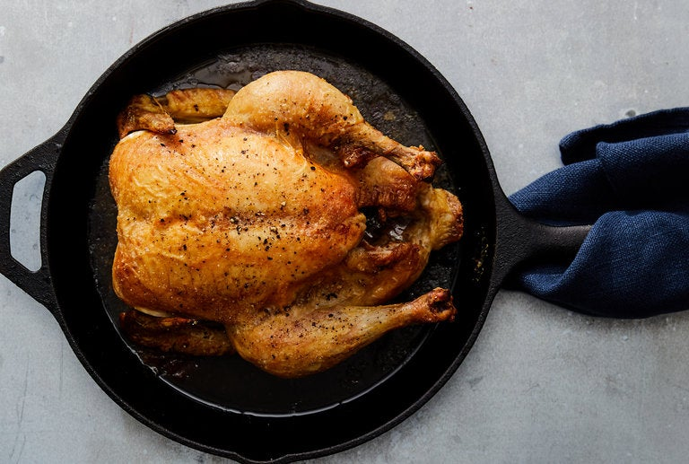

Basic Roast Chicken

Description
With an ingredient list just four items long, the genius of this
bare-bones roast chicken is in its technique. To make it, thoroughly
preheat a cast-iron skillet before sliding into it a seasoned bird,
breast side up. In under an hour you'll get a stunner of a chicken,
with moist, tender white meat, crisp, salty chicken skin, and juicy
dark meat all done to a turn.
Ingredients
- 1 whole chicken, 3 to 4 pounds
- 3 tablespoons extra-virgin olive oil
- Salt and freshly ground black pepper
Steps
- Put a cast-iron skillet on a low rack in the oven and heat
it to 500 degrees. Rub the chicken all over with the oil and
sprinkle it generously with salt and pepper.
- When the oven and skillet are hot, carefully put the chicken
in the skillet, breast side up. Roast for 15 minutes, then
turn the oven temperature down to 350 degrees. Continue to
roast until the bird is golden brown and an instant-read
thermometer inserted into the meaty part of the thigh reads
155 to 165 degrees.
-
Tip the pan to let the juices flow from the chicken's cavity
into the pan. Transfer the chicken to a platter and let it rest
for at least 5 minutes. Carve and serve.